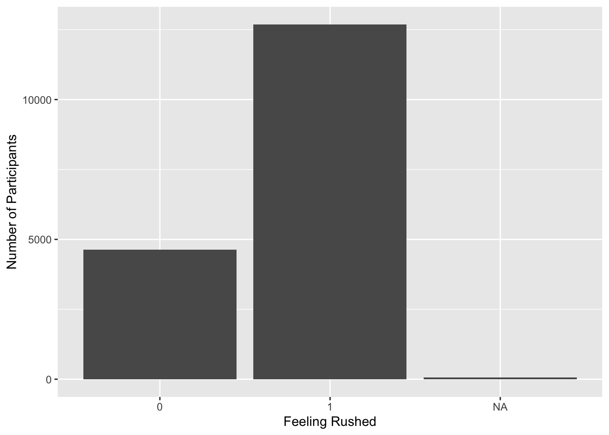

Visualizations with ggplot2
Now that we have our data visualization imaginations going, let’s get
into how we can visually represent our data in R.
The go-to package for data visualization in R is
ggplot2, which is part of the tidyverse. You can find more
information about ggplot2 on the
tidyverse website.
This package approaches data visualization through “a grammar of
graphics.” In other words, using the same syntax, you can create an
infinite number of data visualizations. Although there are a lot of
functions and components to learn at first, once you understand the
overall structure of building graphics in ggplot2, you can
replicate and expand on this structure to visualize data in an unlimited
number of ways.
Create a New Script
Let’s start by creating a new script.

If you have installed the tidyverse, then ggplot2 is
included. Otherwise you can install it now. Let’s also load our dataset
for today.
#install.packages("ggplot2")
#library(ggplot2)
Let’s also load our dataset. For this exercise, we are using a
dataset that is exactly the same as the one that was produced in the
session Data Types and Structures, but that has one
extra variable added called isFeelRushed. This variable is
derived from the feelRushed variable, with the number
1 indicating that somebody feels rushed, and 0
indicating they do not feel rushed. For more information on this
variable and how it was created, see the session R:
Filter and Select
load("data/block-5_visualization.RData")
There are many ways to make data visualizations in R; however, other
approaches tend to be more automatic and consequently limit the amount
you can change and adapt your visualization to your needs.
ggplot2 works in layers, allowing for maximum control and
flexibility.
Here are some of the most common layers (i.e., functions) used in
ggplot2. Typically you connect these layers using the
+ symbol. There is often more than one way to build the
same plot with the ggplot package.
- ggplot(): how you will start most
plots you build in ggplot2. The rest of the information
goes within this function.
- aes(): this is the aesthetic mapping
function, in which you can control aesthetic components of the plot. You
can add colors, axis labels, font sizes and more within this function.
Color and shape can be defined both within and outside of the aesthetic
function.
- geom_point(): used for making a
scatter plot
- geom_line(): used for adding a line
to a plot
- geom_histogram(): used for making a
histogram
- geom_col(): used for making a bar
plot
- xlab, ylab, and
labs(title = ): used for adding axis labels and an
overall title to plots
- color: assigns a color to part of the
plot, such as different groups or the data points
- fill: assigns the interior color of
part of the plot, such as a confidence band or the bars in bar plots
- alpha: used to change the
transparency of a component of the plot. Useful if you lots of have
overlapping data points or distributions from multiple groups.
- size: used to set the size of part of
the plot, such as how big the data points or text should be
There are many more data visualization options in ggplot
but to get started today we are going to focus on making a bar plot
(good for categorical data) and a scatter plot (good for continuous
data).
Basic Bar Plot: Counts
Let’s make our first plot in R! We are going to slowly add layers,
building up to a box plot representing the number of people in each
group in the isFeelRushed variable.
When creating visualizations, it’s always good to have a sense of the
variables you’re working with. It can be helpful to use the
View() command we discussed in the session First
Steps in R:
View(js_data)
It can also be helpful to have the data dictionary handy, so you know
each variable’s data type and description:
First we create the blank plot on which we will add our data. We
nearly always start with the function ggplot and then
telling the function what dataset to use.
ggplot(js_data)

This creates our blank canvas.
Next we tell ggplot what variable we want to use and put it in the
aes() function. If you want a bar chart representing the
number of people in each group, you can add just one variable to the
aes() function. We include the as.factor
function around the isFeelRushed variable so it is treated
as a categorical variable for the box plot instead of a numeric
variable.
ggplot(js_data, aes(x = as.factor(isFeelRushed)))

You now see that the grid represents a scale relevant to that
variable.
Next, we tell ggplot what type of data visualization we want. To
create a bar chart we use the function geom_bar(). To see
how many people are in each of the isFeelRushed groups, we
use the default geom_bar(stat = "count"). Remember that we
connect layers with a + symbol.
ggplot(js_data, aes(x = as.factor(isFeelRushed))) +
geom_bar(stat = "count")

We’ve got a bar chart!
Lastly, let’s add some labels to the x-axis and y-axis to make it
clear what is being plotted.
ggplot(js_data, aes(x = as.factor(isFeelRushed))) +
geom_bar(stat = "count") +
xlab("Feeling Rushed") +
ylab ("Number of Participants")

Basic Bar Plot: Group Means
Now, let’s see if people who feel rushed tend to work more than
people who do not feel rushed. To represent the mean for each group or
some other variable, you add both an x and a y variable to the
aes() function and use the
geom_bar(stat = "summary"). Note that the Y-axis scale has
now adjusted to a scale that matches the variable we are using (i.e.,
mean number of minutes spent working for each group).
ggplot(js_data, aes(x = as.factor(isFeelRushed), y = durWork)) +
geom_bar(stat = "summary") +
xlab("Feeling Rushed") +
ylab ("Average Minutes Working")

- Most plots will start with the
ggplot()function
- You have to include the object where
ggplot() will get
the information for the plot from. In this case, it’s our dataset
js_data
- Within the
aes() function, we identify what the x and y
variables are for this plot
- We add layers using the
+ sign
- Next we tell
ggplot() what type of plot we are making;
in this case we are creating a bar plot using the function
geom_bar()
- Then we add what type of statistic we want presented on the plot.
Here we ask for the mean of each group for the variable durWork using
the function
geom_bar(stat = "summary")
- We add a label to the x-axis with
lab("Feeling Rushed")
- We add the label to the y-axis with
ylab ("Time Working")
Improved Box Plot!
This plot gets the idea across, but we can add more layers and
functions to make more adjustments. See the walkthrough below for how we
made all these changes.
plotlabels <- c("Not Rushed", "Rushed", "Did Not Respond")
ggplot(js_data, aes(x = as.factor(isFeelRushed), y = durWork)) +
geom_bar(stat = "summary", fill = "#2D5E7F") +
xlab("Feeling Rushed") +
ylab ("Average Minutes Working") +
labs(title = "Working and Feeling Rushed") +
scale_x_discrete(labels = plotlabels) +
theme(text = element_text(size = 18),
axis.text.x = element_text(angle = 25, hjust = 1))

- We can change the color of the bars using
fill =. Here
we added the specific color using a hex code. But you can also write in
the names of colors such as “blue”.
- Using
labs(title = "") we added an overall title to the
plot
- We probably want to indicate what each category represents, rather
than the “0”, “1” and “NA” labels. To add text labels, we first create
an object with each of those labels in order
(
plotlabels <- c("Not Rushed", "Rushed", "Did Not Respond")).
Then in the scale_x_discrete(labels = plotlabels) function
we call to that object we created as the labels for the x-axis. There
are many other ways to adjust the labels for each axis, but this method
works well for a small number of groups.
- In the
theme() layer you can add many different
specifications. Here we added
text = element_text(size = 18) to make the text size bigger
than the default and made the x-axis labels angled so they fit better
using axis.text.x = element_text(angle = 25, hjust = 1).
The hjust = adjusts the vertical location of the axis
labels so they don’t overlap with the plot itself. vjust =
can be used to move the labels right and left.
Try manipulating this plot in some way. Can you change the color of
the bars? What happens if you change angle = 90?
Basic Scatter Plot
Now let’s make a scatter plot to visualize two continuous variables.
We are going to check if it looks like there is a correlation between
how much time people work (durWork) and how much they sleep
(durSleep).
ggplot(js_data, aes(durWork, durSleep)) +
geom_point() +
geom_smooth() +
xlab("Minutes Spent Working") +
ylab ("Minutes Spent Sleeping")
- Again we start with the
ggplot() function, including
telling it to use the dataset js_data
- In the
aes() function we list the x and y variables
(here durWork and durSleep)
- The
geom_point() function is what makes a scatter
plot
- The geom_smooth() is what adds the correlation line to the plot
- The
xlab() and ylab() add the x-axis and
y-axis labels to the plot
Improved Scatter Plot!
Now let’s add some layers and aesthetic adjustments to improve this
plot.
ggplot(js_data, aes(durWork, durSleep)) +
geom_point(color = "#2D5E7F", alpha = .2) +
geom_smooth(method = lm, color = "black") +
xlab("Minutes Spent Working") +
ylab ("Minutes Spent Sleeping") +
scale_x_continuous(breaks = seq(0, 1500, 250)) +
labs(title = "Association Between Working and Sleeping") +
theme(text = element_text(size = 18))
- We can change the color of the data points by adding
color = "#2D5E7F" and change the transparency of the data
points (so you can see where there are overlapping clusters) with the
addition of alpha = .2.
- In the
geom_smooth() function we changed the method for
calculating the line to be linear (instead of the ggplot default) using
method = lm and adjusted the color of the line with
color =. Remember that you can write hex code numbers or
the names of colors to adjust colors. Make sure both are in quotes to
avoid error messages.
- We adjust the x-axis tick marks with the
scale_x_continuous(breaks = seq(0, 1500, 250)) part, which
tells R to plot the x-axis on a sequence from 0 to 1500 (this captures
all of the responses in our data), with labels every 250 minutes.
- The
labs(title = "Association Between Working and Sleeping")
adds an overall title to the plot
- Lastly,
theme(text = element_text(size = 18)) adjust
the text size
Try manipulating this plot in some way. Can you make the data points
more and less transparent? Can you change the color of the line? What
happens if the x-axis has labels every 100 minutes?
Your Turn!
For the following questions, the goal is to get you thinking about
the building blocks that go into making a visual. Don’t get too focused
on the finished product right away, and try to think about the
individual steps needed to get you to there. As with any coding task, it
can be very helpful to think of or write each of the steps down in plain
English, then work through each one.
As a final note, a huge part of learning how to code
is using search engines, and there is a ton of documentation out there
to help you. This also relates back to putting things into
plain-language steps, because being able to clearly articulate your
goals is synonymous with using good search terms.
The data dictionary will also be an asset in working through this
exercise:
Good luck!
Take a look at our data set and make two new plots.
Make a plot comparing groups (i.e., a categorical variable) on
one of the duration variables (i.e., a continuous variable).
Make a plot comparing two continuous variables.
Challenge: What is one component of your plot you
would like to change? Can you look up a solution?
See if you can recreate the plot below.
Hint: First try to recreate the plot with NA
values. Then, to remove NA values from the plot, you will
need to use both the na.omit and the
na.rm = TRUE commands.
time_alone_plot <- ggplot(na.omit(js_data), aes(x = factor(timeWantAlone), y = durAlone)) +
geom_boxplot(fill = "blue", na.rm = TRUE) +
scale_x_discrete(labels = c(
"1" = "Would like more time alone",
"2" = "Do not want more time alone"
)) +
labs(
title = "Distribution of Time Spent Alone by Desire to Be Alone",
x = "Desire to Spend Time Alone",
y = "Duration Spent Alone - Minutes"
)
See if you can recreate the plot below.
Hint: This type of chart is called a “proportional
bar chart”, and search engines are your best friend!

prov_edu_plot <- ggplot(js_data, aes(x = province_fact, fill = eduLevel_fact)) +
geom_bar(position = "fill") +
labs(
title = "Proportion of Education Levels by Province",
x = "Province",
y = "Proportion",
fill = "Education Level"
) +
theme(axis.text.x = element_text(angle = 45, hjust = 1))
Save Your Work
We didn’t make any changes to the data in this session, but we did
create a new R script. Save that script and back it up to OSF.

Update Documentation
We’ve added a new file to our project, so we’ll also need to update
the README document to reflect this.
